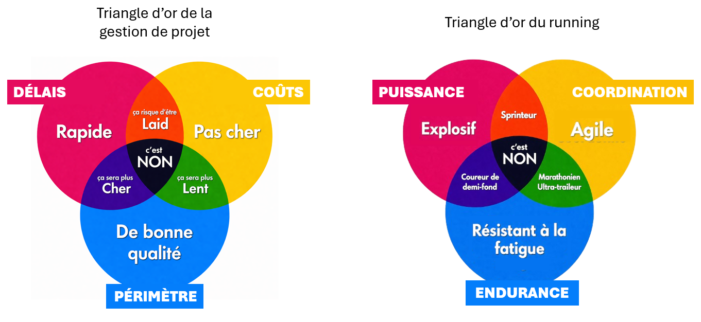

🚿 Shower thoughts d'un agiliste fatigué
L'histoire d'une petite révélation qui a surgit sous la douche.
Fin de journée.
Aujourd’hui, c’était le PI Planning de mon train agile.
Bruyant, intense, parfois frustrant… mais aussi incroyablement constructif. Au final, le résultat est là : les trois prochains sprints de l’équipe sont cadrés, avec des objectifs clairs.
Retour à la maison.
Lessivé, j’ai besoin de me ressourcer alors quoi de mieux qu’une bonne douche chaude pour déconnecter ?
Loin du travail, loin des écrans, une seule envie, me mettre en pause quelques minutes.
Et, puisque le cerveau ne prend jamais de répit, c’est précisément dans ces moments où l'esprit vagabonde que surgissent les questions les plus improbables… et parfois les plus lucides.
Et aujourd'hui ne fait pas exception. Alors je m'interroge naïvement :
👉 Si on demandait à Usain Bolt d’enchaîner des 100 mètres à intensité maximale, sans récupération, au bout de combien de temps se ferait-il battre par un coureur du dimanche qui, lui, ne court qu’un seul 100 mètres ?
Je décide alors de me pencher sur la question, en l’imaginant sur la piste.
Départ explosif. En quelques foulées, il est déjà lancé. Il ne court pas, il vole. Lightning Bolt est flashé en un peu moins de 10 secondes aux 100 mètres. 36 km/h... la routine pour un sprinteur de ce calibre.
Dès le deuxième 100 mètres, quelque chose change. Il est moins aérien, moins fluide, moins impressionnant. Il gagne encore largement, mais la fatigue commence déjà à se faire sentir.
Jusqu’aux 500 mètres, il parvient tant bien que mal à maintenir une allure de croisière élevée. Et puis, tout bascule... La foudre n’a plus de jus.
Ses foulées deviennent approximatives, sa coordination se dégrade. Il se bat contre son propre corps. Il ne sprinte plus. Il s’accroche.
À ce stade, n’importe quel athlète de club pourrait le dépasser.
Moins d’un tour de piste plus tard, l’inévitable se produit : le plus grand sprinteur du monde finit par trottiner, à la recherche d’un second souffle qui ne viendra pas. Ses jambes deviennent lourdes, flageolantes.
Et c’est précisément à cet instant qu’un coureur du dimanche n’aurait plus qu’à enfiler ses baskets pour le dépasser… et le battre à plate couture.
En résumé, même le meilleur sprinteur du monde n’arrive pas à maintenir ses performances plus de quelques minutes.
Pourquoi ? Parce que de la même façon qu'on doit forcément faire des compromis entre la qualité, les coûts et les délais de nos projets, Bolt a mis en place un entraînement pour être le plus rapide et le plus explosif possible au détriment de l'endurance.

Et puis je me suis dit que finalement, c'est comme dans tous les domaines, on ne peut pas utiliser un élément au maximum de ses capacités tout en maintenant un niveau de performance élevé :- Une carte graphique utilisée pour miner des cryptomonnaies voit sa durée de vie largement amoindrie.
- Un moteur de voiture qui tourne en continu à pleine puissance surchauffe et s'use plus vite
- Un sol exploité sans repos s'épuise et devient infertile
Comme le disait Racine, "Qui veut voyager loin ménage sa monture".
Et c’est à cet instant, alors que j'hésitais entre le gel douche à la vanille ou à la mandarine, que l’éclair de lucidité m’a frappé :
Si même la Foudre ne peut pas enchaîner les sprints sans devenir médiocre...
👉 Pourquoi mon équipe enchaîne-t-elle les sprints sur un projet qui est, par nature, un marathon ?
Mon équipe s'essoufle, comment lui redonner de l'élan ?
Et si la solution venait de vous ?
En tant que Product Owner
- Avez-vous maintenu le cap des priorités sur la durée du sprint ?
- Vous êtes-vous laissé débordé par les "pressions externes", les "urgences" et les "repriorisations" ?
- Avez-vous suffisamment communiqué la vision et la valeur des fonctionnalités pour garder l'équipe motivée ?
En tant que Scrum Master
- Avez-vous suffisamment accompagné l'équipe dans la gestion de sa vélocité ?
- Avez-vous incité l'équipe à prendre des temps plus calmes, d'introspection et de rétrospective ?
- Avez-vous su supprimer les obstacles et protéger l'équipe des interruptions externes ?
En tant que membre de l'équipe de développement
- Avez-vous clairement exprimé vos besoins et vos limites ?
- Avez-vous su signaler quand la charge était trop lourde ou quand une tâche devenait bloquante ?
- Avez-vous fait preuve de transparence sur vos capacités de traitement au moment du PI Planning ?
En tant que partie prenante à l'échelle (RTE, architectes, Business Owners, ...)
- Avez-vous synchronisé vos équipes et vos dépendances vers un objectif clairement défini et atteignable ?
- Avez-vous veillé à ce que le train agile avance à un rythme soutenable et que chacun ait des temps pour inspecter, adapter et respirer ?
En tant que partie prenante externe (clients, utilisateurs finaux, ...)
- Avez-vous respecté le rythme de l'équipe ?
- Avez-vous communiqué vos besoins de manière claire et priorisée ?
- Avez-vous donné du feedback constructif au bon moment, permettant à l'équipe de rester motivée et alignée ?
👉 Et si l'ensemble de ce paragraphe est composé de questions, c'est bien parce que trouver les bonnes réponses nécessite une véritable remise en question de ses pratiques personnelles et en tant qu'équipe...
Quelques idées à explorer...
Evidemment, s'il existait une recette miracle de la performance durable, elle serait déjà appliquée dans tous les projets.Les solutions sont uniques à chaque équipe et chaque contexte mais je peux tout de même vous partager quelques pistes à explorer suivant le diagnostic que vous pourrez faire dans votre contexte agile.
Quand une équipe change constamment de direction, elle ne ralentit pas uniquement à cause du travail supplémentaire. Elle s’épuise surtout parce qu’elle perd progressivement la sensation d’avancer vers quelque chose de clair.
Si vous ressentez un manque d'alignement et de vision avec une tendance à avoir des priorités qui changent en cours de sprint, vous pouvez :
- Recentrer vos sprints en écrivant des objectifs clairs et peu nombreux
- (Re)partager la vision produit et la trajectoire souhaitée
- Lorsque vous souhaitez ajouter ou supprimer une tâche, identifier sa valeur business et vous demander si cela vous rapproche ou vous éloigne de vos objectifs de sprint
Si vous constatez une surcharge dans l'engagement de l'équipe dès le début du sprint vous pouvez :
- Retravailler la gestion de la capacité réelle de l'équipe (les estimations sont-elles cohérentes ? revues régulièrement ?)
- Arrêter de planifier à 100% de la capacité théorique, prendre une marge pour produire moins mais atteindre les objectifs fixés
- Réduire volontairement le nombre d'objectifs en parallèle pour retrouver du focus sur l'essentiel
- Créer de vrais espaces de respiration : rétrospectives utiles, ateliers d'amélioration, moments informels
- Valoriser les avancées plutôt que de focaliser uniquement sur le reste à faire
- Laisser davantage de place à l'autonomie et à la prise d'initiative
- Créer des espaces d'échange où les difficultés peuvent être exprimées sans crainte de jugement (One to One)
- Bannir les engagements pris par le management ou le PO sans consulter l'équipe
- Construire la confiance sur la durée grâce à des engagements réalistes et tenus
- Faire de la transparence un outil d'amélioration collective, pas un outil de surveillance
Et après avoir vidé le ballon d'eau chaude...
Et après avoir vidé le ballon d'eau chaude… toute cette histoire me rappelle vaguement une vieille fable.
Celle du lièvre et de la tortue.
Le lièvre, sûr de sa vitesse, part à toute allure. Vaniteux, il domine. Il écrase la concurrence comme Usain Bolt sur ses premiers 100 mètres.
Et puis il se repose, il se disperse, il perd le rythme.
Non pas parce qu’il est lent… mais parce qu’il n’a pas su gérer son effort.
La tortue, elle, n’accélère jamais vraiment... Mais elle ne s’arrête pas non plus.
Elle avance encore et encore. Sans se laisser distraire, elle progresse à un rythme uniforme qui lui assure d'atteindre l'arrivée.
👉 Et à la fin, ce n’est pas celui qui court le plus vite qui gagne, c'est celui qui a su tenir la distance.
Alors quand vous vous demandez si votre équipe va assez vite pour livrer la prochaine release, demandez-vous aussi si elle va assez lentement pour être encore capable d'avancer dans six mois.
Rien ne sert de courir, il faut partir à point.
Ce qu'il faut en retenir :